Declarative infrastructure automation defines the desired end state of a system without specifying the exact sequence of actions required to achieve it. In this model, the automation tool determines how to reconcile the current state with the desired configuration. Technologies such as Terraform, CloudFormation, and Kubernetes manifest files follow this approach. They allow engineers to express infrastructure as a set of final conditions—such as the number of virtual machines, network configurations, or security rules—and rely on the underlying system to compute and execute the necessary changes. Declarative automation is inherently state‑driven and emphasizes consistency, predictability, and repeatability.
Imperative infrastructure automation, in contrast, specifies the exact steps that must be executed to reach a particular configuration. This approach requires the engineer to define the procedural workflow, including the order of operations and the commands to be executed. Tools such as Bash scripts, PowerShell, and certain Ansible playbooks operate imperatively. Imperative automation provides fine-grained control over execution but places responsibility on the author to manage dependencies, handle errors, and ensure that repeated executions do not produce unintended side effects.
Idempotency and Its Importance
Idempotency refers to the property of an operation whereby executing it multiple times results in the same final state as executing it once. In the context of infrastructure automation, an idempotent process ensures that repeated runs do not create duplicate resources, corrupt configurations, or trigger unnecessary changes. Declarative systems typically enforce idempotency by comparing the desired state with the actual state and applying only the modifications required to achieve alignment.
Idempotency is essential for reliable Infrastructure as Code practices. It enables safe re‑execution of automation during development, deployment, and recovery scenarios. It also supports drift correction, allowing systems to automatically reconcile unintended manual changes. Furthermore, idempotency ensures consistent outcomes across environments, facilitates reproducible deployments, and enhances the stability of CI/CD pipelines by making automation predictable and resilient to partial failures.
References
Configuration drift refers to the situation where the actual state of an infrastructure environment gradually diverges from the state defined in its Infrastructure as Code (IaC) configuration. Drift occurs when changes are made directly to the infrastructure—either intentionally or accidentally—without updating the IaC source of truth. As a result, the deployed environment no longer matches the version‑controlled configuration, leading to inconsistencies, unexpected behavior, and difficulties in maintenance or troubleshooting.
Configuration drift typically happens through several mechanisms. The most common cause is manual changes performed through cloud dashboards or command‑line tools, such as modifying security group rules, resizing instances, or adjusting network settings. Drift may also arise from automated processes outside the IaC workflow, including auto‑scaling events, system patches, or external scripts that alter resources. Additionally, environment‑specific changes, such as emergency fixes applied directly in production, can introduce differences that are never reflected back into the IaC repository.
IaC tools detect configuration drift by comparing the desired state defined in code with the actual state retrieved from the infrastructure provider. Declarative IaC systems such as Terraform maintain a state file that represents the last known configuration. When a user runs commands like terraform plan, the tool queries the cloud provider’s API to obtain the current resource configuration and evaluates any differences between the real environment and the declared configuration. Any mismatches—such as missing resources, altered parameters, or unexpected modifications—are reported as drift. This detection mechanism allows IaC tools to highlight inconsistencies and, when appropriate, reconcile the environment back to the desired state through a controlled and predictable update process.
References :
Provisioning vs. Configuration Management
Provisioning refers to the process of creating and preparing the underlying infrastructure resources required for an environment. This includes tasks such as allocating virtual machines, creating networks and subnets, assigning IP addresses, configuring storage volumes, and setting up security groups. Provisioning tools interact directly with cloud provider APIs to ensure that the necessary infrastructure components exist and are correctly defined. The focus is on building the infrastructure itself, not on what runs inside it.
Configuration management, in contrast, deals with installing software, applying system settings, managing files, and ensuring that applications and services inside the provisioned infrastructure are configured correctly. Configuration management tools operate at the operating system or application level, ensuring that servers maintain a consistent and predictable configuration over time. The focus is on managing the state of the system after it has been provisioned, including updates, patches, and application deployments.
Where Cloud‑Init and Ansible Fit In
Cloud‑init is primarily a provisioning‑time initialization tool. It runs automatically when a cloud instance boots for the first time and performs early‑stage setup tasks such as creating users, injecting SSH keys, installing initial packages, and writing basic configuration files. Cloud‑init is executed only during instance initialization and is not intended for ongoing configuration management. It is best suited for lightweight, one‑time bootstrapping of newly provisioned virtual machines.
Ansible, on the other hand, is a configuration management tool. It is designed to apply and maintain system configurations repeatedly and reliably. Ansible can install software, manage services, enforce file contents, apply security policies, and update systems over time. Unlike cloud‑init, Ansible can be run at any point in the lifecycle of a server and supports idempotent operations, ensuring that repeated executions converge to the same desired state.
References :
The state file in Infrastructure as Code (IaC) systems, such as Terraform, serves as a critical internal database that records the current known state of all managed infrastructure resources. It stores detailed metadata—including resource identifiers, dependencies, attributes, and relationships—that allows the IaC tool to understand how the declared configuration in code corresponds to the actual deployed environment. This enables accurate change planning, efficient updates, and reliable detection of configuration drift. Because the state file contains sensitive information, such as cloud resource IDs, IP addresses, and sometimes embedded secrets, and because it changes frequently as infrastructure evolves, it must not be committed to a Git repository. Storing it in version control would expose confidential data, create merge conflicts, and lead to inconsistent or corrupted states across environments. Instead, teams share and maintain the state file using a remote backend, typically a secure cloud storage service such as AWS S3, Azure Blob Storage, or Google Cloud Storage, often combined with a locking mechanism to prevent concurrent writes. Platforms like Terraform Cloud or Terraform Enterprise also provide centralized, encrypted, and versioned state management. These approaches ensure that all team members and CI/CD pipelines operate against a single, authoritative state, maintaining consistency, security, and reliability across the entire infrastructure lifecycle.
This project involved deploying a web server on CSC cPouta using OpenTofu. I managed the infrastructure through the PowerShell terminal in Visual Studio Code. The cloud environment is built on OpenStack, and the server setup was automated with cloud-init during startup. The virtual machine was connected to the existing CSC network, without requiring manual software installation via SSH.
The project lives entirely in six files plus the usual Git housekeeping. versions.tf and
main.tf were given by the assignment; variables.tf, cloud-init.yaml,
outputs.tf, and the terraform.tfvars pair were written to meet the stated
requirements.
Installed with winget install --exact --id=OpenTofu.Tofu
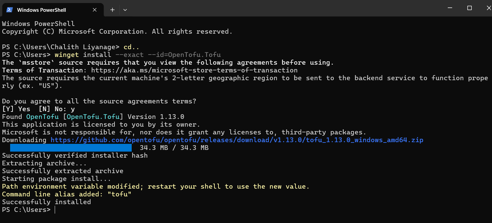
prediction : counting the resource blocks in main.tf (key pair, security group, two rules, port, VM, floating IP) gives 7. The data block for the project network is a lookup, not a creation, so I expected 7 to add, 0 to change, 0 to destroy.
Result : tofu plan proposed 7 to add. tofu apply completed with “Resources: 7 added, 0 changed, 0 destroyed.” The initial public IP was 86.50.23.204 and the webpage displayed my name in the page heading. The browser confirmed the page was served over HTTP.
Explanation: OpenTofu provisioned the infrastructure and cloud-init configured the web server automatically at first boot.
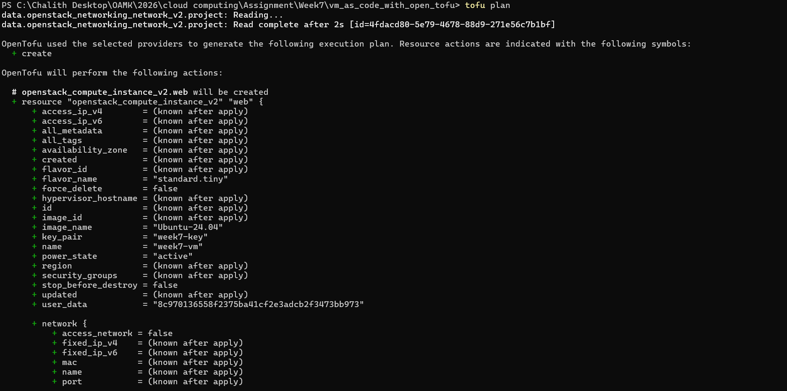
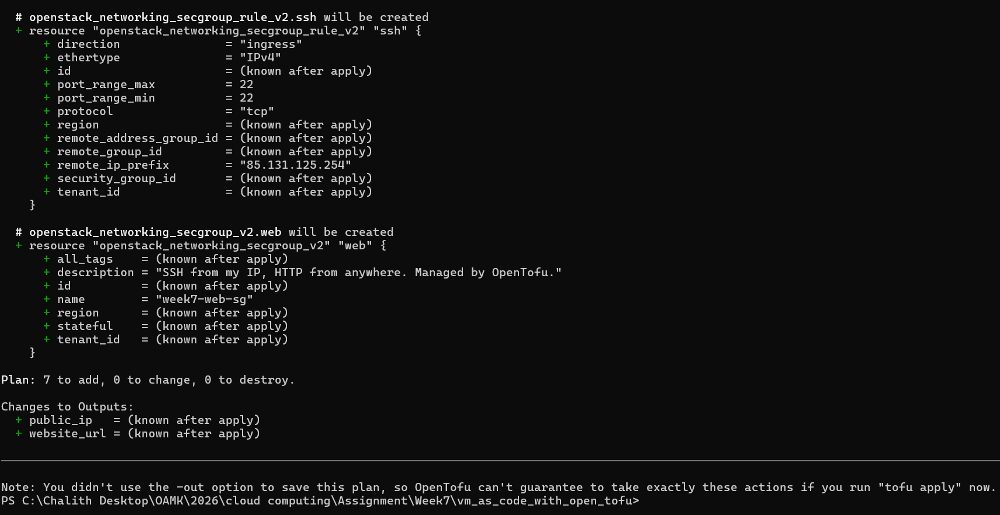
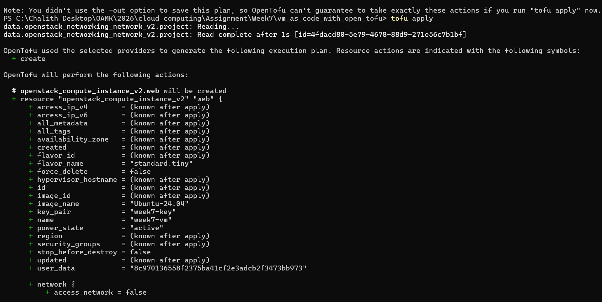
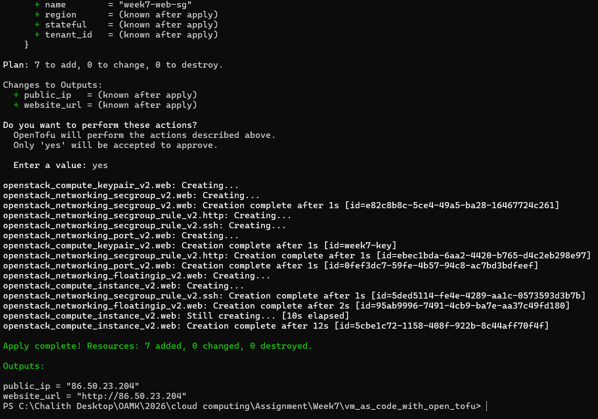
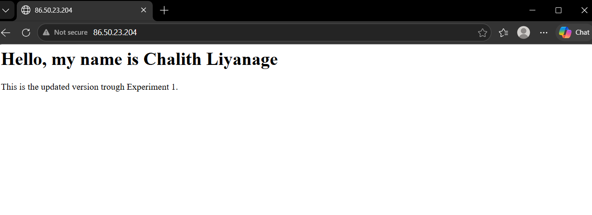
Verifying instance in cPouta
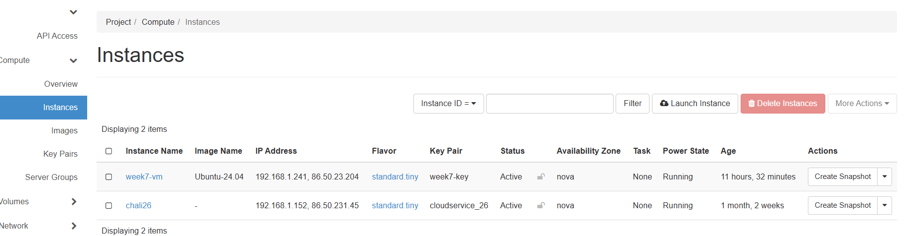
Prediction
Before this experiment, cloud-init.yaml was extended to also write a small separate /var/www/html/status.txt file from student_name/page_message, independent of the learning diary page itself — this keeps those two variables meaningful to test without touching the learning diary content.
The VM will be destroyed and re-created, not updated in place, because page_message is baked into user_data via templatefile(), and changing user_data is something OpenStack cannot apply to a running instance.
The public IP will not change, since the floating IP is a separate resource attached to the port, not to the instance directly.
Then I updated message in terraform
Result
After changing the page message, tofu plan showed that 1 to add, 0 to change, 1 to destroy. tofu apply replaced the VM. The updated page message appeared at the original floating IP
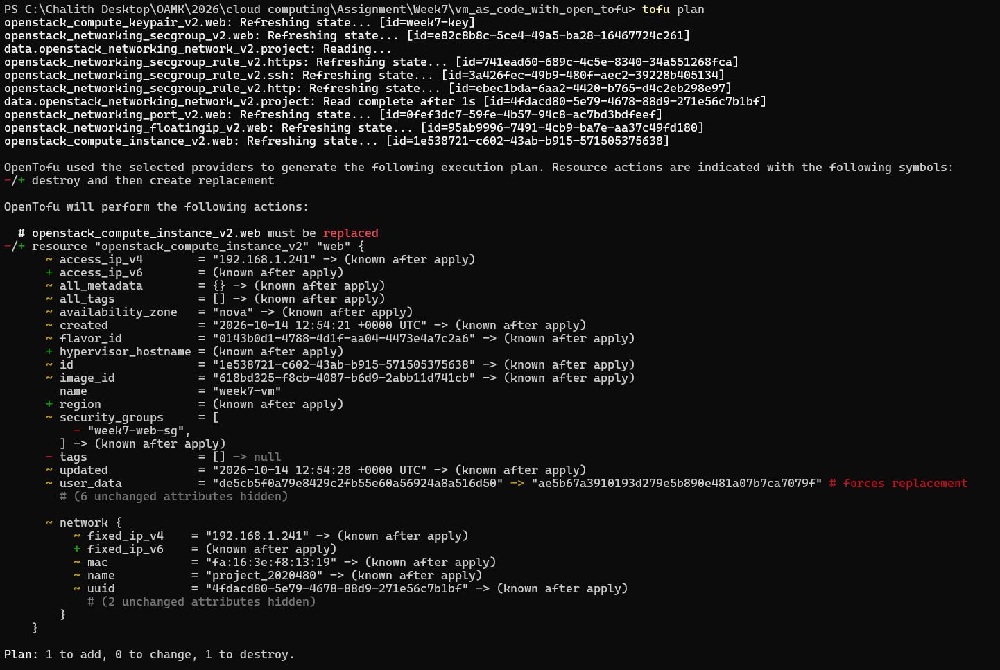
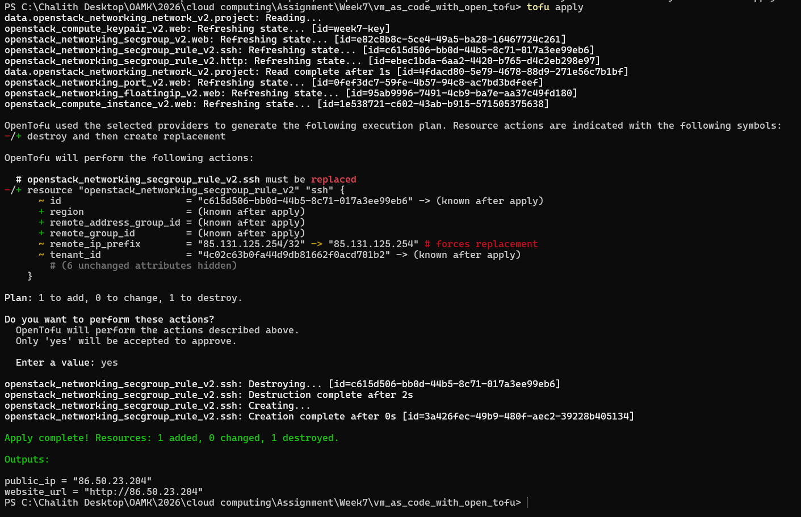
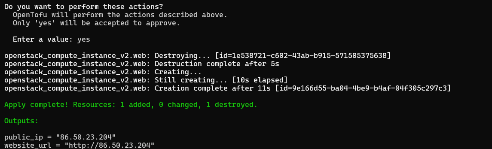
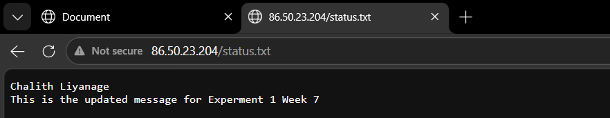
Explanation
cloud-init only runs once, during a VM's first boot. There is no mechanism to make OpenStack "re-run" it on a live instance, so the only way to apply new user_data is to destroy and recreate the VM.
The floating IP was a separately managed resource attached to the network port and was retained during this VM replacement.
Prediction
I expected OpenTofu to add one new security group rule for HTTPS, with no resources changed or destroyed. I also expected the virtual machine to remain unaffected.
Result
Added a new openstack_networking_secgroup_rule_v2.https resource opening TCP 443 from anywhere.
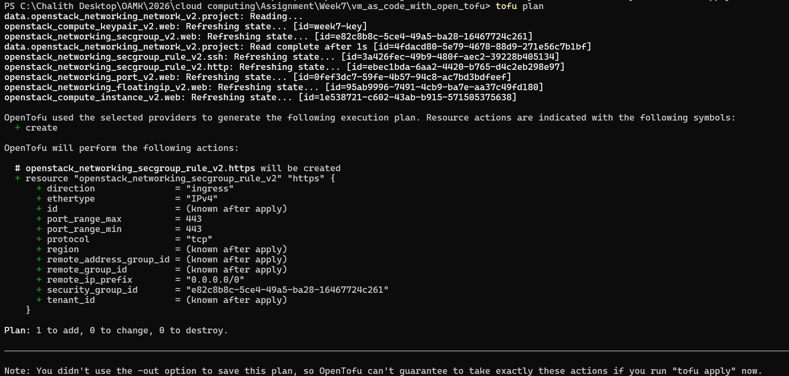
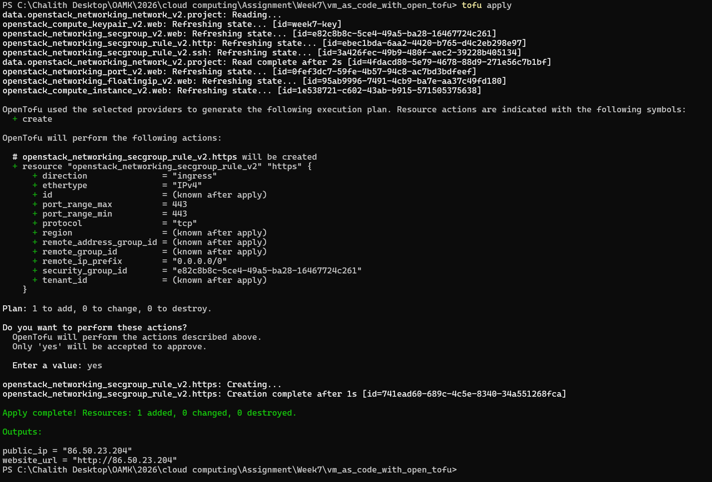
Explanation
How this differs from Option A: Option A changed user_data, which forced a full VM replace. Option B only added a security group rule — a firewall-level change enforced by the network layer, completely independent of the instance's boot configuration, so OpenStack applied it instantly without touching the VM.
Does the page work over HTTPS? No. Opening port 443 at the firewall only means traffic on that port is no longer blocked — it does not mean anything is listening on it. Apache was only configured by cloud-init to listen on port 80, with no TLS virtual host and no certificate, so the connection fails at the TCP level before ever reaching an application.
Prediction
Deleting the HTTP rule in the web console will break the page immediately, since port 80 is how the floating IP is reached.
tofu plan will notice the rule is missing and propose to re-create it, because this rule is a resource OpenTofu created and is tracked in its state file.
Result
Opened the diary page in a private browser window: ERR_CONNECTION_TIMED_OUT. Port 80 is now blocked at the firewall, so the page cannot load even though the VM and Apache are both still running fine.
tofu plan: openstack_networking_secgroup_rule_v2.http will be created, Plan: 1 to add, 0 to change, 0 to destroy. Matches the prediction — OpenTofu detected the drift straight away.
tofu apply: Apply complete! Resources: 1 added, 0 changed, 0 destroyed. The HTTP rule exists again with a brand-new rule ID.
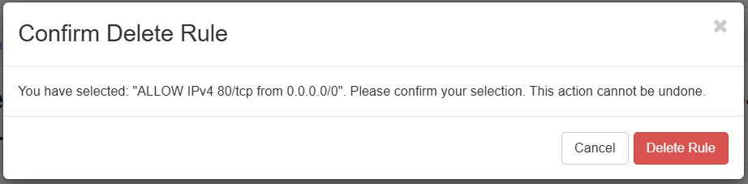
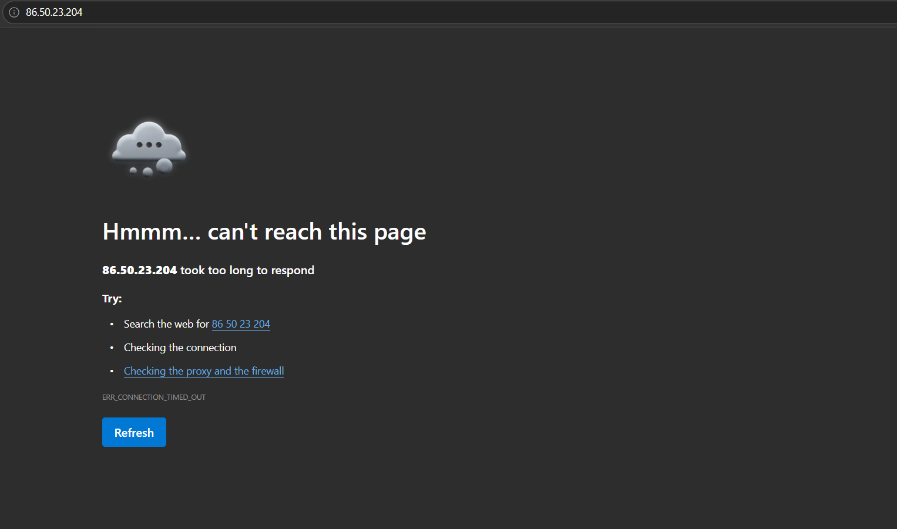
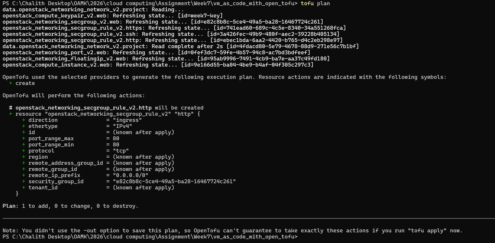
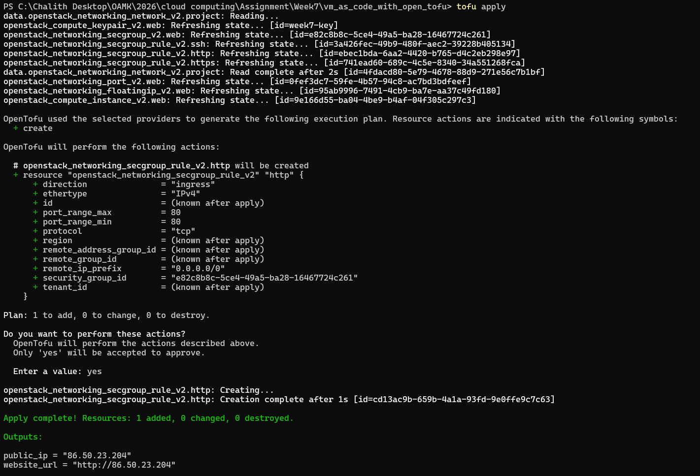
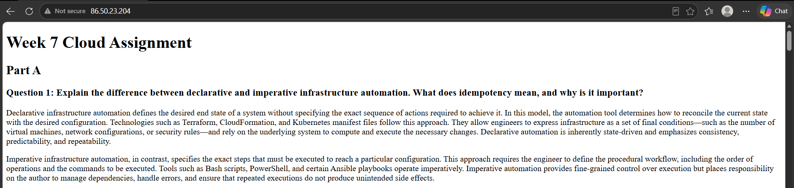
Explanation
OpenTofu's state file records every resource it created, including this exact security group rule, by ID. When tofu plan refreshes state against the real infrastructure and finds that ID no longer exists in OpenStack, it treats this the same as any other missing resource: something declared in code is absent from reality, so it proposes to create it again.
Prediction
tofu plan will say "No changes" and will not propose removing the new rule, unlike Part 1.
Reasoning: OpenTofu only compares resources it knows about (declared in code, tracked in state) against reality. A rule added entirely outside that workflow was never declared, so it has nothing to compare it to and no reason to flag it.
Result
Added a Custom TCP Rule, Ingress, port 8080, CIDR 0.0.0.0/0 through the console. The security group now shows 6 rules, with the new one not declared anywhere in main.tf.
tofu plan refreshes exactly the 9 resources OpenTofu knows about (keypair, secgroup, 3 rules – ssh/http/https, port, floating IP, instance, network data). The port 8080 rule never appears in this list at all.
No changes. Your infrastructure matches the configuration. — confirms the prediction exactly.
tofu plan still reports No changes — adding or removing this rule never touched OpenTofu's state either way.
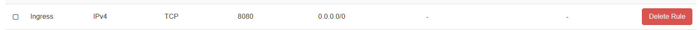
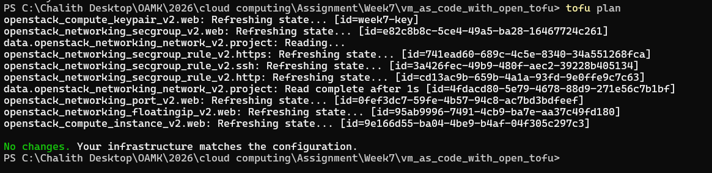
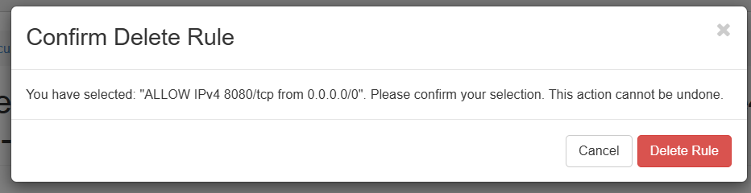
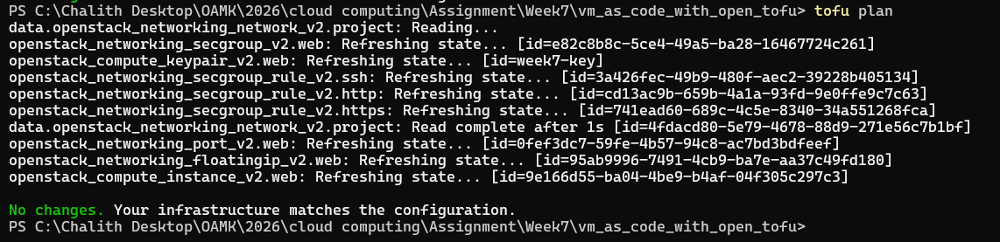
Explanation
Part 1 (delete a tracked rule): the rule existed in OpenTofu's state. Removing it from reality creates a mismatch between state and reality that OpenTofu can see and fix.
Part 2 (add an untracked rule): the rule never existed in OpenTofu's state, because OpenTofu never created it. Drift detection is a one-directional comparison — state → reality, not reality → state — so a resource created completely outside the code is invisible to tofu plan until it is explicitly imported (e.g. with tofu import).
One problem I encountered was an error in the variable file related to the IP address in CIDR format. The configuration expected the IP address to be provided in the correct CIDR notation, but the default value caused an issue. I solved this by removing the default value from the variable definition and providing the appropriate value in the variable file. This resolved the configuration error and allowed me to continue working with OpenTofu.
Another problem occurred when running OpenTofu because the configuration changes required the virtual machine to be replaced rather than updated in place. This meant that the existing virtual machine could be destroyed and recreated. I reviewed the tofu plan output to understand why the replacement was necessary and then confirmed the result after applying the changes. This helped me understand how changes to certain resource attributes can trigger replacement instead of an in-place update.
Compared with the manual setup in Week 1, Infrastructure as Code (IaC) makes managing cloud infrastructure more efficient and reliable. In the manual approach, creating and configuring a server required dozens of clicks in the web interface. This was time-consuming and increased the risk of overlooking important settings, such as security rules. With IaC, writing and troubleshooting the code takes some time initially, but subsequent deployments can be completed much faster, often in seconds.
Another major advantage of IaC is repeatability. Manual configuration makes it difficult to ensure that multiple servers have exactly the same settings, which increases the likelihood of human error. With OpenTofu, the same configuration can be applied repeatedly to create consistent infrastructure across different environments. IaC also improves security because firewall rules and other configurations are explicitly defined in code. For example, SSH access can be restricted to a specific IP address instead of allowing connections from anywhere. Using Git to track configuration changes also provides an audit trail, making it easier to review and manage modifications.
Overall, manual setup is useful for quick tests, temporary environments, and validating prototypes. However, Infrastructure as Code is more suitable for larger projects, production environments, and situations where infrastructure needs to be reproduced reliably. It also supports the creation of consistent development, testing, and production environments and makes disaster recovery easier by allowing infrastructure to be recreated from code.